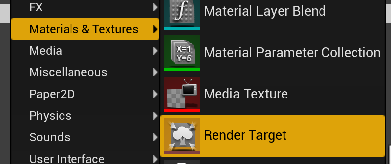

Ue4 Global Shaders - 02 渲染
UE4版本:4.26.2
前置知识
- 了解图形学中的渲染管线、SwapChain、Color Buffer和DepthStencil Buffer等
- 上一篇
工程源码
测试场景: Levels/RenderToQuad_Color
其他参考源码
重点看这个范例如何使用RenderModule的GetResolvedSceneColorCallbacks去添加渲染函数
使用Global Shaders
目前我们的GlobalShaders仅仅是输出一个纯色，为了让它起作用，我们将这样使用该Shader:
- 创建一个TextureRenderTarget2D(渲染目标贴图)
- 使用我们的GlobalShaders绘制到这个渲染目标贴图上(纯色)
- 将这个渲染目标贴图作为某个Material的输入显示出来(纯色)
创建TextureRenderTarget2D

创建使用GlobalShader的代码
为了便于在蓝图中调用，我们从UBlueprintFunctionLibrary派生一个类，并在其中加入一个供蓝图调用的函数。可以利用UE编辑器界面添加C++类，注意要选择到本插件的目录。下面介绍手动添加C++类的方法：
- 在插件的public目录中创建一个名为UtilityFunctions.h的文件
- 在插件的private目录中创建一个名为UtilityFunctions.cpp的文件
- 刷新工程，并分别填入以下内容：
UtilityFunctions.h
#pragma once
#include "CoreMinimal.h"
#include "Kismet/BlueprintFunctionLibrary.h"
#include "UtilityFunctions.generated.h"
UCLASS(MinimalAPI)
class UUtilityFunctions : public UBlueprintFunctionLibrary
{
GENERATED_BODY()
UFUNCTION(BlueprintCallable, Category = "KenUtility", meta = (WorldContext = "WorldContexObject"))
static void DrawToQuad(class UTextureRenderTarget2D* OutputRenderTarget,FLinearColor MyColor);
};
UtilityFunctions.cpp
#include "UtilityFunctions.h"
#include "MyShaders.h"
#include <Engine/TextureRenderTarget2D.h>
static void DrawToQuad_RenderThread(
FRHICommandListImmediate& RHICmdList,
FTextureRenderTargetResource* OutputRenderTargetResource,
FLinearColor MyColor)
{
check(IsInRenderingThread());
FRHITexture2D* RenderTargetTexture = OutputRenderTargetResource->GetRenderTargetTexture();
RHICmdList.Transition(FRHITransitionInfo(RenderTargetTexture, ERHIAccess::SRVMask, ERHIAccess::RTV));
FRHIRenderPassInfo RPInfo(RenderTargetTexture, ERenderTargetActions::Load_Store);
RHICmdList.BeginRenderPass(RPInfo, TEXT("DrawColorPass"));
{
// SetViewport
RHICmdList.SetViewport(
0, 0, 0.f,
OutputRenderTargetResource->GetSizeX(), OutputRenderTargetResource->GetSizeY(), 1.f);
FGlobalShaderMap* GlobalShaderMap = GetGlobalShaderMap(GMaxRHIFeatureLevel);
TShaderMapRef<FShader_VS> VertexShader(GlobalShaderMap);
TShaderMapRef<FShader_PS> PixelShader(GlobalShaderMap);
// Set the graphic pipeline state.
FGraphicsPipelineStateInitializer GraphicsPSOInit;
RHICmdList.ApplyCachedRenderTargets(GraphicsPSOInit);
GraphicsPSOInit.DepthStencilState = TStaticDepthStencilState<false, CF_Always>::GetRHI();
GraphicsPSOInit.BlendState = TStaticBlendState<>::GetRHI();
GraphicsPSOInit.RasterizerState = TStaticRasterizerState<>::GetRHI();
GraphicsPSOInit.PrimitiveType = PT_TriangleList;
GraphicsPSOInit.BoundShaderState.VertexDeclarationRHI = GetVertexDeclarationFVector4();
GraphicsPSOInit.BoundShaderState.VertexShaderRHI = VertexShader.GetVertexShader();
GraphicsPSOInit.BoundShaderState.PixelShaderRHI = PixelShader.GetPixelShader();
SetGraphicsPipelineState(RHICmdList, GraphicsPSOInit);
PixelShader->SetParameters(RHICmdList, MyColor);
// Vertex Buffer Begins --------------------------
FRHIResourceCreateInfo createInfo;
FVertexBufferRHIRef MyVertexBufferRHI = RHICreateVertexBuffer(sizeof(FVector4) * 4, BUF_Static, createInfo);
void* VoidPtr = RHILockVertexBuffer(MyVertexBufferRHI, 0, sizeof(FVector4) * 4, RLM_WriteOnly);
FVector4 v[4];
// LT
v[0] = FVector4(-1.0f, 1.0f, 0.0f, 1.0f);
// RT
v[1] = FVector4(1.0f, 1.0f, 0.0f, 1.0f);
// LB
v[2] = FVector4(-1.0f, -1.0f, 0.0f, 1.0f);
// RB
v[3] = FVector4(1.0f, -1.0f, 0.0f, 1.0f);
FMemory::Memcpy(VoidPtr, &v, sizeof(FVector4) * 4);
RHIUnlockVertexBuffer(MyVertexBufferRHI);
// Vertex Buffer Ends --------------------------
// Index Buffer Begins--------------------
static const uint16 Indices[6] =
{ 0,1,2,
2,1,3 };
FRHIResourceCreateInfo IndexBufferCreateInfo;
FIndexBufferRHIRef MyIndexBufferRHI = RHICreateIndexBuffer(sizeof(uint16), sizeof(uint16) * 6, BUF_Static, IndexBufferCreateInfo);
void* VoidPtr2 = RHILockIndexBuffer(MyIndexBufferRHI, 0, sizeof(uint16) * 6, RLM_WriteOnly);
FMemory::Memcpy(VoidPtr2, Indices, sizeof(uint16) * 6);
RHIUnlockIndexBuffer(MyIndexBufferRHI);
// Index Buffer Ends-----------------------
// Draw Indexed
RHICmdList.SetStreamSource(0, MyVertexBufferRHI, 0);
RHICmdList.DrawIndexedPrimitive(MyIndexBufferRHI, 0, 0, 4, 0, 2, 1);
MyIndexBufferRHI.SafeRelease();
MyVertexBufferRHI.SafeRelease();
}
RHICmdList.EndRenderPass();
RHICmdList.Transition(FRHITransitionInfo(RenderTargetTexture, ERHIAccess::RTV, ERHIAccess::SRVMask));
}
void UUtilityFunctions::DrawToQuad(class UTextureRenderTarget2D* OutputRenderTarget, FLinearColor MyColor)
{
check(IsInGameThread());
if (!OutputRenderTarget)
{
return;
}
FTextureRenderTargetResource* TextureRenderTargetResource = OutputRenderTarget->GameThread_GetRenderTargetResource();
ENQUEUE_RENDER_COMMAND(CaptureCommand)(
[TextureRenderTargetResource, MyColor](FRHICommandListImmediate& RHICmdList)
{
DrawToQuad_RenderThread(RHICmdList, TextureRenderTargetResource, MyColor);
}
);
}
代码详解
头文件
DrawToQuad函数接收两个参数，一个是UTextureRenderTarget2D，也就是在编辑器中可以创建的RenderTarget
所以我们在调用之前先创建一个这种类型的资源。
另外一个参数是颜色。
由于这个函数是UFUNCTION，因此我们可以在蓝图中调用，两个参数我们都可以直接在蓝图中设置。

Cpp文件
Cpp文件包含两个函数，分别是DrawToQuad和DrawToQuad_RenderThread，从名字上容易看出，DrawToQuad_RenderThread是在渲染线程中进行的。 虚幻源码均遵循这个规则
XXX函数对应的渲染线程函数就命名为XXX_RenderThread。
DrawToQuad
- 前几行先检查了当前运行在游戏线程中，并判断如果没有指定RenderTarget，则退出
- 然后通过GameThread_GetRenderTargetResource()函数获取到RenderTarget的FTextureRenderTargetResource资源。
- 最后使用ENQUE_RENDER_COMMAND宏，将DrawToQuad_RenderThread函数以Lambda函数的形式传入渲染线程
DrawToQuad_RenderThread
先使用IsInRenderingThread检查当前运行在渲染线程中调用 OutputRenderTargetResource 的 GetRenderTargetTexture()函数，获取可以在渲染线程操作的FRHITexture2D对象。
这里有个规律：在渲染线程可操作的类型名称中基本都有RHI
调用RHICmdList.Transition将渲染目标的状态从ShaderResourceView转换为RenderTargetView。根据我个人理解，ShaderResourceView是供Shader读取的，而RenderTargetView可以作为一个渲染Pass的绘制目标，即被绘制、写入的。ERHIAccess::SRVMask表示ShaderResourceView的两种可能状态,
// A mask of the two possible SRV states
SRVMask = SRVCompute | SRVGraphics,
然后声明了一个FRHIRenderPassInfo,它描述了一个RenderPass，例如该RenderPass该写入Color Buffer还是DepthStencil Buffer,还是同时都写入。FRHIRenderPassInfo有多个重载的构造函数，根据参数数量和类型决定了到底写到哪里。这里只传入了一个FRHITexture2D,表示这个RenderPass将被写入ColorBuffer。
第二个参数ERenderTargetActions::Load_Store表示对资源进行“加载-储存”的操作。
RHICmdList.BeginRenderPass和结尾处的RHICmdList.EndRenderPass表示两者之间的部分为一个RenderPass
先通过RHICmdlist.SetViewport设置“视口”大小为RenderTarget的尺寸，因为我们这个RenderPass最终要绘制到这个RenderTarget上，因此尺寸要保持一致
然后在GlobalShaderMap中取到我们上一节声明的顶点和像素Shader FMyVertexDeclaration VertexDesc;开始的两行声明了顶点布局
接着的一大段设置了Graphic pipeline 的各种状态，例如DepthStencilState，BlendState，绘制类型，顶点布局，以及顶点和像素着色器等
PixelShader->SetParameter向Shader传入了颜色参数 下面用注释包裹了两个大的部分，分别是设定Vertex Buffer和Index Buffer，设定的方法很类似，都是Lock->Memcpy->Unlock
顶点位置我们在Vertex Shader中不做任何处理直接传递给Pixel Shader，因此，在Vertex Buffer中我们直接设定位置为一个长宽均为[-1,1]的正方形，作为NDC坐标。
绘制IndexPrimitive的函数为DrawIndexedPrimitive，其参数原型为：
void DrawIndexedPrimitive(FRHIIndexBuffer* IndexBuffer, int32 BaseVertexIndex, uint32 FirstInstance, uint32 NumVertices, uint32 StartIndex, uint32 NumPrimitives, uint32 NumInstances)
- 最后要重新把RenderTarget的状态从RTV转回SRV
使用Global Shader输出的贴图
这一步仅需要创建一个材质球，并将RenderTarget作为贴图输入即可